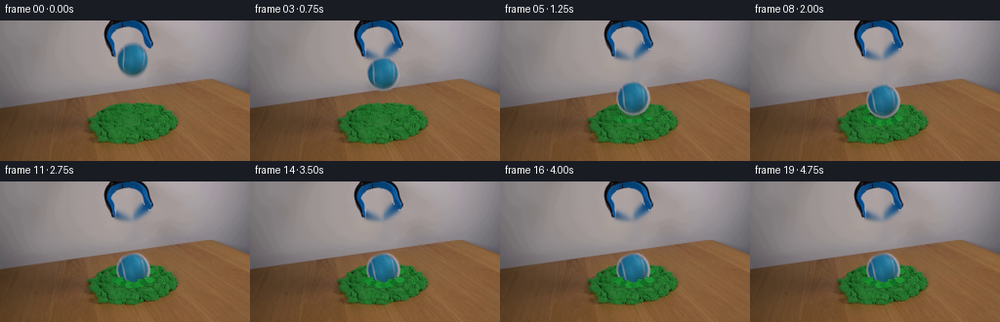
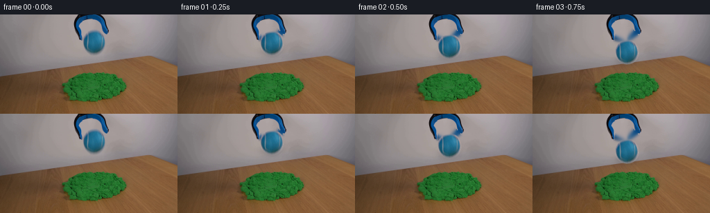
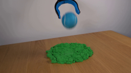
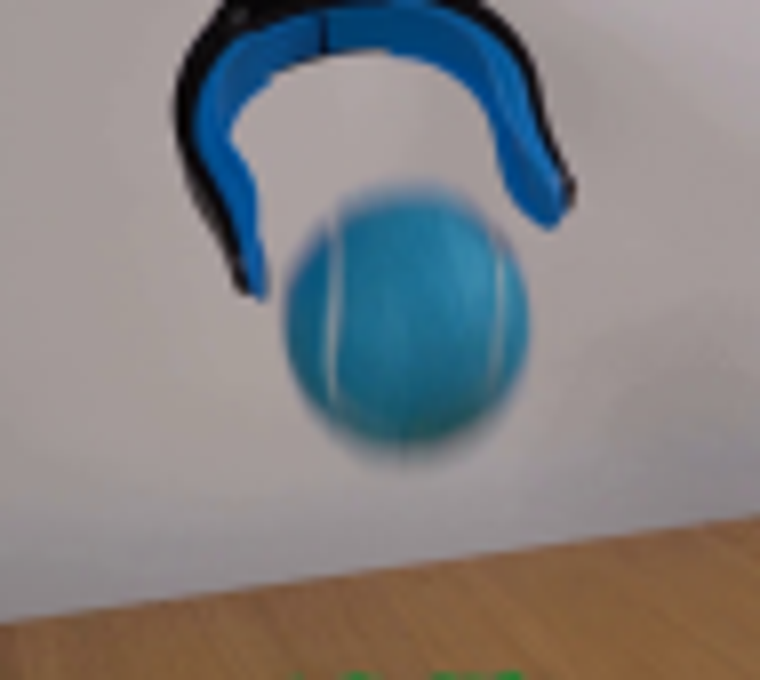
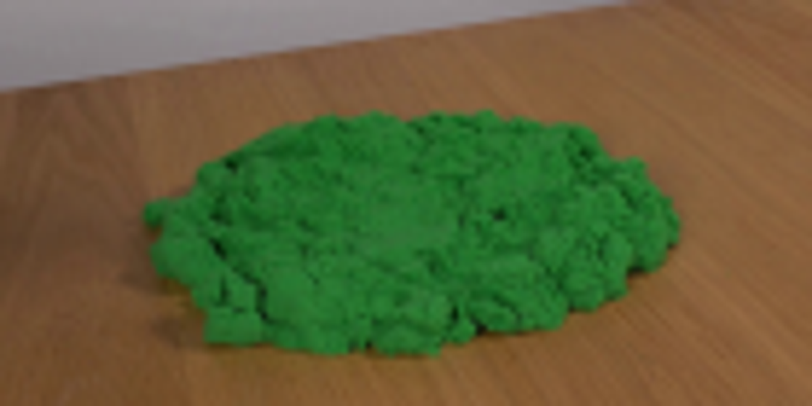
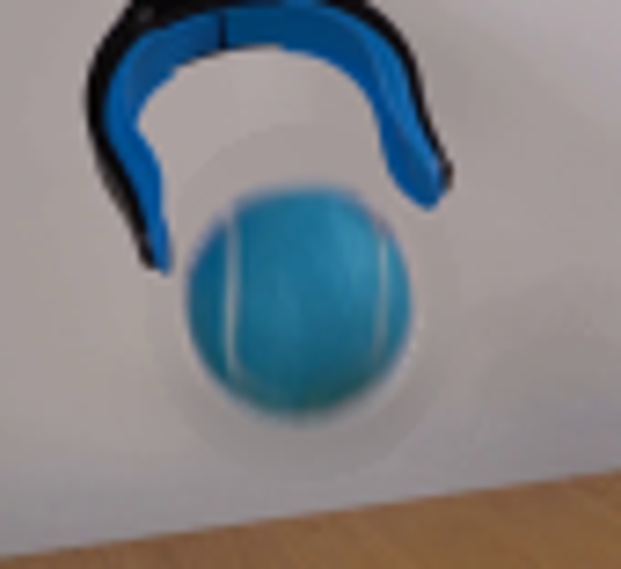
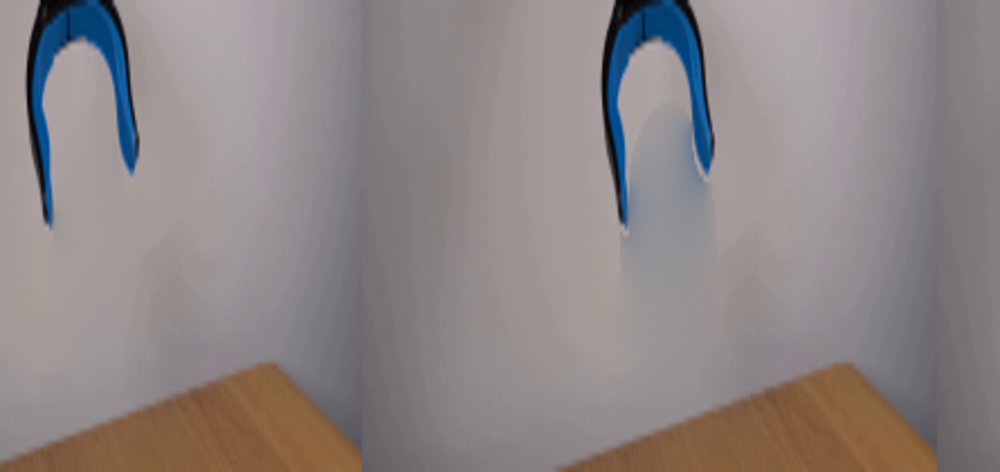

CODING AGENTS AS PIXEL WORLD MODELS
traex/GPT-5.6-Sol · 0016
点击播放 · 原生 RGB 像素
逐轮保存的候选
回放视频、检查图与代码变化。
每份候选均可单独播放。实际图片检查记录在下方工具轨迹中。
候选 01播放与检查图
点击播放 · 原生 RGB 像素

展开代码变化
--- 上一保存版本
+++ 本次保存版本
@@ -0,0 +1,190 @@
+from pathlib import Path
+import cv2
+import numpy as np
+from PIL import Image, ImageDraw, ImageFilter
+import artifact_io
+
+CASE_DIR = Path(__file__).resolve().parent
+W, H = 256, 144
+N = 20
+
+
+def rgba_over(rgb, overlay):
+ """Alpha composite a PIL RGBA image over an RGB ndarray."""
+ base = Image.fromarray(rgb, 'RGB').convert('RGBA')
+ return np.asarray(Image.alpha_composite(base, overlay).convert('RGB'), dtype=np.uint8)
+
+
+def soft_ellipse(size, box, color, blur=0.0):
+ lay = Image.new('RGBA', size, (0, 0, 0, 0))
+ d = ImageDraw.Draw(lay)
+ d.ellipse(box, fill=color)
+ if blur:
+ lay = lay.filter(ImageFilter.GaussianBlur(blur))
+ return lay
+
+
+def make_clean_plate(src):
+ """Remove the released ball while retaining the two open grabber jaws."""
+ bgr = cv2.cvtColor(src, cv2.COLOR_RGB2BGR)
+ mask = np.zeros((H, W), np.uint8)
+ cv2.ellipse(mask, (136, 40), (19, 21), 0, 0, 360, 255, -1, cv2.LINE_AA)
+ clean = cv2.inpaint(bgr, mask, 5, cv2.INPAINT_TELEA)
+ clean = cv2.cvtColor(clean, cv2.COLOR_BGR2RGB)
+
+ # Inpainting grazes the inner ends of the jaws. Restore only their known
+ # dark/blue pixels (the ball's circular interior is deliberately excluded).
+ hsv = cv2.cvtColor(src, cv2.COLOR_RGB2HSV)
+ tool_color = ((hsv[..., 1] > 80) & (hsv[..., 2] < 190)) | (hsv[..., 2] < 45)
+ yy, xx = np.mgrid[:H, :W]
+ tool_geo = (yy < 24) | ((xx < 120) & (yy < 39)) | ((xx > 151) & (yy < 34))
+ restore = tool_color & tool_geo
+ # soften the one-pixel antialiased perimeter by restoring neighboring pixels
+ restore = cv2.dilate(restore.astype(np.uint8), np.ones((3, 3), np.uint8), iterations=1).astype(bool) & tool_geo
+ clean[restore] = src[restore]
+ return clean
+
+
+def extract_ball(src):
+ """Extract the source tennis ball with a feathered, analytic silhouette."""
+ x0, y0, x1, y1 = 116, 20, 157, 62
+ crop = src[y0:y1, x0:x1].copy()
+ hh, ww = crop.shape[:2]
+ yy, xx = np.mgrid[:hh, :ww]
+ cx, cy = 136 - x0, 40 - y0
+ # Slightly pear-shaped photographed silhouette: tighter at the very top.
+ r = np.sqrt(((xx - cx) / 17.1) ** 2 + ((yy - cy) / 17.7) ** 2)
+ alpha = np.clip((1.055 - r) / 0.095, 0, 1)
+ alpha *= np.clip((yy - 2.0) / 3.5, 0, 1)
+ # Prevent a sliver of the right grabber jaw entering the cutout.
+ alpha[(xx > 35) & (yy < 13)] *= 0.15
+ rgba = np.dstack([crop, np.uint8(alpha * 255)])
+ return Image.fromarray(rgba, 'RGBA')
+
+
+def transformed_ball(ball, frame_idx, impact=False):
+ # A very small natural rotation reveals motion without changing identity.
+ angle = min(frame_idx, 9) * 1.8
+ b = ball.rotate(angle, resample=Image.Resampling.BICUBIC, expand=False, center=(20, 20))
+ if impact:
+ # A tennis ball compresses fleetingly on impact.
+ b = b.resize((43, 39), Image.Resampling.LANCZOS)
+ return b
+
+
+def add_particles(layer, k, rng):
+ """Short-lived kinetic-sand grains thrown radially by impact."""
+ d = ImageDraw.Draw(layer)
+ # Fixed initial velocities produce coherent motion frame-to-frame.
+ particles = [
+ (-16, -12, 1.5), (-11, -18, 1.3), (-7, -10, 1.7), (8, -17, 1.4),
+ (13, -12, 1.7), (18, -8, 1.3), (-22, -6, 1.1), (23, -4, 1.2),
+ (-4, -21, 1.0), (4, -23, 1.0), (16, -18, 0.9), (-17, -16, 0.9)
+ ]
+ t = k * 0.28
+ for i, (vx, vy, rad) in enumerate(particles):
+ x = 136 + vx * t
+ y = 91 + vy * t + 18.0 * t * t
+ rr = max(.65, rad - 0.10 * k)
+ col = [(22, 126, 45, 245), (17, 111, 36, 245), (31, 143, 51, 240)][i % 3]
+ d.ellipse((x - rr, y - rr, x + rr, y + rr), fill=col)
+ if rr > 1.0:
+ d.point((round(x - .3), round(y - .5)), fill=(48, 157, 61, 210))
+
+
+def add_sand_deformation(rgb, idx, stage, front=False):
+ """Build a textured crater/rim around the impact point."""
+ lay = Image.new('RGBA', (W, H), (0, 0, 0, 0))
+ d = ImageDraw.Draw(lay)
+ p = min(1.0, max(0.0, stage))
+
+ if not front:
+ # Contact shadow and compacted hollow. It is elliptical due to camera angle.
+ rx, ry = 8 + 13 * p, 2.2 + 5.0 * p
+ shadow = soft_ellipse((W, H), (136-rx, 93-ry, 136+rx, 93+ry),
+ (3, 39, 15, int(78 + 35*p)), blur=1.1)
+ lay = Image.alpha_composite(lay, shadow)
+ d = ImageDraw.Draw(lay)
+ # Rear rim: irregular little granules lifted by the ball.
+ rear = [(-18,-2,4), (-13,-5,3), (-8,-7,3), (-3,-8,3),
+ (3,-8,3), (8,-7,3), (13,-5,3), (18,-2,4)]
+ for j, (dx, dy, r) in enumerate(rear):
+ q = (0.5 + 0.5*p)
+ rr = r*q
+ x, y = 136 + dx*(0.65+0.35*p), 94 + dy*(0.6+0.4*p)
+ col = [(20,120,40,245),(25,137,45,245),(16,105,35,245)][j%3]
+ d.ellipse((x-rr, y-rr*.58, x+rr, y+rr*.58), fill=col)
+ if 6 <= idx <= 9:
+ add_particles(lay, idx - 5, np.random.default_rng(7))
+ else:
+ # Front lip occludes the lower ball, making it visibly embedded rather
+ # than pasted over the original pile.
+ grow = 0.55 + 0.45*p
+ clumps = [(-17,1,4.2),(-13,3,4.6),(-8,5,4.2),(-3,6,4.5),
+ (2,6,4.4),(7,5,4.2),(12,3,4.5),(17,1,4.0)]
+ for j, (dx, dy, r) in enumerate(clumps):
+ rr = r*grow
+ x, y = 136 + dx, 100 + dy*grow
+ col = [(20,126,42,255),(24,139,45,255),(16,112,37,255),(30,145,49,255)][j%4]
+ d.ellipse((x-rr, y-rr*.62, x+rr, y+rr*.62), fill=col)
+ # fine dark fissure between selected clumps
+ if j in (1, 4, 6):
+ d.line((x+rr*.25, y-1, x+rr*.55, y+1.5), fill=(7,79,28,150), width=1)
+ # A few grains resting on the lower blue surface.
+ for x, y, r in [(124,99,1.2),(130,102,1.0),(143,101,1.1),(149,98,1.0)]:
+ d.ellipse((x-r,y-r*.65,x+r,y+r*.65), fill=(25,136,44,245))
+ return rgba_over(rgb, lay)
+
+
+def paste_ball(rgb, ball, cx, cy, idx, impact=False):
+ # Physically plausible soft shadow, sharpening as the ball nears the pile.
+ dist = max(0.0, 82.0 - cy)
+ blur = 2.4 + dist * .055
+ shadow_alpha = int(52 - min(25, dist*.35))
+ sw = 14 + max(0, dist*.07)
+ sh = 5 + max(0, dist*.04)
+ shad = soft_ellipse((W, H), (cx-sw, cy+12-sh, cx+sw, cy+12+sh),
+ (12, 18, 20, shadow_alpha), blur=blur)
+ rgb = rgba_over(rgb, shad)
+
+ b = transformed_ball(ball, idx, impact)
+ lay = Image.new('RGBA', (W, H), (0, 0, 0, 0))
+ x = int(round(cx - b.width/2))
+ y = int(round(cy - b.height/2))
+ lay.alpha_composite(b, (x, y))
+ return rgba_over(rgb, lay)
+
+
+def main():
+ src = np.asarray(Image.open(CASE_DIR / 'first_frame.png').convert('RGB'), dtype=np.uint8)
+ assert src.shape == (H, W, 3)
+ clean = make_clean_plate(src)
+ ball = extract_ball(src)
+
+ # Sampled ballistic fall, one small rebound, then settling into the sand.
+ centers_y = [40, 42, 47, 55, 66, 80, 86, 80, 83, 88, 91,
+ 91, 91, 91, 91, 91, 91, 91, 91, 91]
+ centers_x = [136,136,136,136,136,136,136,136,136,136,136,
+ 136,136,136,136,136,136,136,136,136]
+
+ frames = [src.copy()]
+ for i in range(1, N):
+ fr = clean.copy()
+ cy, cx = centers_y[i], centers_x[i]
+ if i >= 5:
+ # Initial impact is abrupt; final crater reaches full shape by frame 10.
+ stage = min(1.0, (i - 5) / 5.0)
+ fr = add_sand_deformation(fr, i, stage, front=False)
+ fr = paste_ball(fr, ball, cx, cy, i, impact=(i == 6))
+ if i >= 5:
+ stage = min(1.0, (i - 5) / 5.0)
+ fr = add_sand_deformation(fr, i, stage, front=True)
+ frames.append(fr)
+
+ frames = np.stack(frames).astype(np.uint8)
+ assert np.array_equal(frames[0], src), 'frame 00 changed'
+ artifact_io.save(frames, CASE_DIR)
+
+
+if __name__ == '__main__':
+ main()
候选 02播放与检查图
点击播放 · 原生 RGB 像素

展开代码变化
--- 上一保存版本
+++ 本次保存版本
@@ -11,7 +11,7 @@
def rgba_over(rgb, overlay):
"""Alpha composite a PIL RGBA image over an RGB ndarray."""
- base = Image.fromarray(rgb, 'RGB').convert('RGBA')
+ base = Image.fromarray(rgb).convert('RGBA')
return np.asarray(Image.alpha_composite(base, overlay).convert('RGB'), dtype=np.uint8)
@@ -26,21 +26,41 @@
def make_clean_plate(src):
"""Remove the released ball while retaining the two open grabber jaws."""
- bgr = cv2.cvtColor(src, cv2.COLOR_RGB2BGR)
- mask = np.zeros((H, W), np.uint8)
- cv2.ellipse(mask, (136, 40), (19, 21), 0, 0, 360, 255, -1, cv2.LINE_AA)
- clean = cv2.inpaint(bgr, mask, 5, cv2.INPAINT_TELEA)
- clean = cv2.cvtColor(clean, cv2.COLOR_BGR2RGB)
-
- # Inpainting grazes the inner ends of the jaws. Restore only their known
- # dark/blue pixels (the ball's circular interior is deliberately excluded).
+ # Fit a smooth low-order surface to nearby neutral wall pixels. A fitted
+ # plate avoids the colored smearing that generic inpainting creates when a
+ # saturated blue object is surrounded by narrow blue grabber jaws.
hsv = cv2.cvtColor(src, cv2.COLOR_RGB2HSV)
- tool_color = ((hsv[..., 1] > 80) & (hsv[..., 2] < 190)) | (hsv[..., 2] < 45)
yy, xx = np.mgrid[:H, :W]
- tool_geo = (yy < 24) | ((xx < 120) & (yy < 39)) | ((xx > 151) & (yy < 34))
- restore = tool_color & tool_geo
- # soften the one-pixel antialiased perimeter by restoring neighboring pixels
- restore = cv2.dilate(restore.astype(np.uint8), np.ones((3, 3), np.uint8), iterations=1).astype(bool) & tool_geo
+ xn, yn = (xx - 136.0) / 60.0, (yy - 36.0) / 45.0
+ def basis(x, y):
+ return np.stack([np.ones_like(x), x, y, x*x, x*y, y*y,
+ x*x*x, x*x*y, x*y*y, y*y*y], axis=-1)
+ samples = ((xx >= 78) & (xx <= 196) & (yy <= 72) &
+ (hsv[..., 1] < 36) & (hsv[..., 2] > 72))
+ A = basis(xn[samples], yn[samples])
+ wall = np.empty_like(src, dtype=np.float64)
+ all_A = basis(xn, yn)
+ for channel in range(3):
+ coef = np.linalg.lstsq(A, src[..., channel][samples], rcond=None)[0]
+ wall[..., channel] = all_A @ coef
+ wall = np.clip(wall, 0, 255).astype(np.uint8)
+
+ clean = src.copy()
+ replace = (((xx - 136) / 21.5) ** 2 + ((yy - 41) / 24.5) ** 2) <= 1
+ clean[replace] = wall[replace]
+
+ # Recover only connected tool-colored regions that enter from the top edge;
+ # the ball itself is a disconnected component and therefore stays removed.
+ tool_color = (((hsv[..., 1] > 62) & (hsv[..., 2] < 205)) |
+ ((hsv[..., 2] < 58) & (yy < 43)))
+ tool_color &= (xx >= 103) & (xx <= 164) & (yy < 45)
+ count, labels = cv2.connectedComponents(tool_color.astype(np.uint8), 8)
+ top_labels = np.unique(labels[:3, 103:165])
+ restore_core = np.isin(labels, top_labels[top_labels != 0])
+ tool_geo = ((yy < 19) | ((xx < 126) & (yy < 42)) |
+ ((xx > 146) & (yy < 38)))
+ restore = (cv2.dilate(restore_core.astype(np.uint8), np.ones((3, 3), np.uint8),
+ iterations=1).astype(bool) & tool_geo)
clean[restore] = src[restore]
return clean
@@ -59,7 +79,7 @@
# Prevent a sliver of the right grabber jaw entering the cutout.
alpha[(xx > 35) & (yy < 13)] *= 0.15
rgba = np.dstack([crop, np.uint8(alpha * 255)])
- return Image.fromarray(rgba, 'RGBA')
+ return Image.fromarray(rgba)
def transformed_ball(ball, frame_idx, impact=False):
候选 03播放与检查图
候选 04播放与检查图
点击播放 · 原生 RGB 像素

展开代码变化
--- 上一保存版本
+++ 本次保存版本
@@ -45,9 +45,14 @@
wall[..., channel] = all_A @ coef
wall = np.clip(wall, 0, 255).astype(np.uint8)
- clean = src.copy()
- replace = (((xx - 136) / 21.5) ** 2 + ((yy - 41) / 24.5) ** 2) <= 1
- clean[replace] = wall[replace]
+ # Poisson blending keeps the original broad illumination gradient while
+ # replacing the local object gradients with the neutral fitted wall.
+ replace_mask = np.zeros((H, W), np.uint8)
+ cv2.ellipse(replace_mask, (136, 41), (22, 25), 0, 0, 360, 255, -1)
+ clean = cv2.cvtColor(cv2.seamlessClone(
+ cv2.cvtColor(wall, cv2.COLOR_RGB2BGR),
+ cv2.cvtColor(src, cv2.COLOR_RGB2BGR),
+ replace_mask, (136, 41), cv2.NORMAL_CLONE), cv2.COLOR_BGR2RGB)
# Recover only connected tool-colored regions that enter from the top edge;
# the ball itself is a disconnected component and therefore stays removed.
候选 05播放与检查图
可观测工具轨迹
实际执行的命令与返回图片。
命令 1exit 0
/bin/bash -lc 'cat GENERATION_RULES.md'
命令 2exit 0
/bin/bash -lc "cat prompt.txt && printf '\\n--- files ---\\n' && find . -maxdepth 2 -type f -printf '%p\\n' | sort"
命令 3exit 0
/bin/bash -lc "sed -n '1,240p' artifact_io.py"
命令 4exit 0
/bin/bash -lc "python - <<'PY'
import cv2, PIL, numpy, scipy
print('cv2',cv2.__version__,'PIL',PIL.__version__,'numpy',numpy.__version__,'scipy',scipy.__version__)
from PIL import Image
im=Image.open('first_frame.png'); print(im.mode, im.size)
PY"命令 5exit 0
/bin/bash -lc "python - <<'PY'
from PIL import Image
im=Image.open('first_frame.png')
im.crop((85,0,180,85)).resize((760,680)).save('.tmp/top_zoom.png')
im.crop((65,65,205,135)).resize((1120,560)).save('.tmp/sand_zoom.png')
PY"命令 6exit 0
/bin/bash -lc "python - <<'PY'
import cv2, numpy as np
im=cv2.imread('first_frame.png'); hsv=cv2.cvtColor(im,cv2.COLOR_BGR2HSV)
for p in [(136,40),(136,27),(124,38),(151,27),(115,28),(146,10),(108,10),(140,70),(135,90)]:
x,y=p;print(p,'BGR',im[y,x], 'HSV',hsv[y,x])
PY"命令 7exit 0
/bin/bash -lc "cat > generate.py <<'PY'
from pathlib import Path
import cv2
import numpy as np
from PIL import Image, ImageDraw, ImageFilter
import artifact_io
CASE_DIR = Path(__file__).resolve().parent
W, H = 256, 144
N = 20
def rgba_over(rgb, overlay):
\"\"\"Alpha composite a PIL RGBA image over an RGB ndarray.\"\"\"
base = Image.fromarray(rgb, 'RGB').convert('RGBA')
return np.asarray(Image.alpha_composite(base, overlay).convert('RGB'), dtype=np.uint8)
def soft_ellipse(size, box, color, blur=0.0):
lay = Image.new('RGBA', size, (0, 0, 0, 0))
d = ImageDraw.Draw(lay)
d.ellipse(box, fill=color)
if blur:
lay = lay.filter(ImageFilter.GaussianBlur(blur))
return lay
def make_clean_plate(src):
\"\"\"Remove the released ball while retaining the two open grabber jaws.\"\"\"
bgr = cv2.cvtColor(src, cv2.COLOR_RGB2BGR)
mask = np.zeros((H, W), np.uint8)
cv2.ellipse(mask, (136, 40), (19, 21), 0, 0, 360, 255, -1, cv2.LINE_AA)
clean = cv2.inpaint(bgr, mask, 5, cv2.INPAINT_TELEA)
clean = cv2.cvtColor(clean, cv2.COLOR_BGR2RGB)
# Inpainting grazes the inner ends of the jaws. Restore only their known
# dark/blue pixels (the ball's circular interior is deliberately excluded).
hsv = cv2.cvtColor(src, cv2.COLOR_RGB2HSV)
tool_color = ((hsv[..., 1] > 80) & (hsv[..., 2] < 190)) | (hsv[..., 2] < 45)
yy, xx = np.mgrid[:H, :W]
tool_geo = (yy < 24) | ((xx < 120) & (yy < 39)) | ((xx > 151) & (yy < 34))
restore = tool_color & tool_geo
# soften the one-pixel antialiased perimeter by restoring neighboring pixels
restore = cv2.dilate(restore.astype(np.uint8), np.ones((3, 3), np.uint8), iterations=1).astype(bool) & tool_geo
clean[restore] = src[restore]
return clean
def extract_ball(src):
\"\"\"Extract the source tennis ball with a feathered, analytic silhouette.\"\"\"
x0, y0, x1, y1 = 116, 20, 157, 62
crop = src[y0:y1, x0:x1].copy()
hh, ww = crop.shape[:2]
yy, xx = np.mgrid[:hh, :ww]
cx, cy = 136 - x0, 40 - y0
# Slightly pear-shaped photographed silhouette: tighter at the very top.
r = np.sqrt(((xx - cx) / 17.1) ** 2 + ((yy - cy) / 17.7) ** 2)
alpha = np.clip((1.055 - r) / 0.095, 0, 1)
alpha *= np.clip((yy - 2.0) / 3.5, 0, 1)
# Prevent a sliver of the right grabber jaw entering the cutout.
alpha[(xx > 35) & (yy < 13)] *= 0.15
rgba = np.dstack([crop, np.uint8(alpha * 255)])
return Image.fromarray(rgba, 'RGBA')
def transformed_ball(ball, frame_idx, impact=False):
# A very small natural rotation reveals motion without changing identity.
angle = min(frame_idx, 9) * 1.8
b = ball.rotate(angle, resample=Image.Resampling.BICUBIC, expand=False, center=(20, 20))
if impact:
# A tennis ball compresses fleetingly on impact.
b = b.resize((43, 39), Image.Resampling.LANCZOS)
return b
def add_particles(layer, k, rng):
\"\"\"Short-lived kinetic-sand grains thrown radially by impact.\"\"\"
d = ImageDraw.Draw(layer)
# Fixed initial velocities produce coherent motion frame-to-frame.
particles = [
(-16, -12, 1.5), (-11, -18, 1.3), (-7, -10, 1.7), (8, -17, 1.4),
(13, -12, 1.7), (18, -8, 1.3), (-22, -6, 1.1), (23, -4, 1.2),
(-4, -21, 1.0), (4, -23, 1.0), (16, -18, 0.9), (-17, -16, 0.9)
]
t = k * 0.28
for i, (vx, vy, rad) in enumerate(particles):
x = 136 + vx * t
y = 91 + vy * t + 18.0 * t * t
rr = max(.65, rad - 0.10 * k)
col = [(22, 126, 45, 245), (17, 111, 36, 245), (31, 143, 51, 240)][i % 3]
d.ellipse((x - rr, y - rr, x + rr, y + rr), fill=col)
if rr > 1.0:
d.point((round(x - .3), round(y - .5)), fill=(48, 157, 61, 210))
def add_sand_deformation(rgb, idx, stage, front=False):
\"\"\"Build a textured crater/rim around the impact point.\"\"\"
lay = Image.new('RGBA', (W, H), (0, 0, 0, 0))
d = ImageDraw.Draw(lay)
p = min(1.0, max(0.0, stage))
if not front:
# Contact shadow and compacted hollow. It is elliptical due to camera angle.
rx, ry = 8 + 13 * p, 2.2 + 5.0 * p
shadow = soft_ellipse((W, H), (136-rx, 93-ry, 136+rx, 93+ry),
(3, 39, 15, int(78 + 35*p)), blur=1.1)
lay = Image.alpha_composite(lay, shadow)
d = ImageDraw.Draw(lay)
# Rear rim: irregular little granules lifted by the ball.
rear = [(-18,-2,4), (-13,-5,3), (-8,-7,3), (-3,-8,3),
(3,-8,3), (8,-7,3), (13,-5,3), (18,-2,4)]
for j, (dx, dy, r) in enumerate(rear):
q = (0.5 + 0.5*p)
rr = r*q
x, y = 136 + dx*(0.65+0.35*p), 94 + dy*(0.6+0.4*p)
col = [(20,120,40,245),(25,137,45,245),(16,105,35,245)][j%3]
d.ellipse((x-rr, y-rr*.58, x+rr, y+rr*.58), fill=col)
if 6 <= idx <= 9:
add_particles(lay, idx - 5, np.random.default_rng(7))
else:
# Front lip occludes the lower ball, making it visibly embedded rather
# than pasted over the original pile.
grow = 0.55 + 0.45*p
clumps = [(-17,1,4.2),(-13,3,4.6),(-8,5,4.2),(-3,6,4.5),
(2,6,4.4),(7,5,4.2),(12,3,4.5),(17,1,4.0)]
for j, (dx, dy, r) in enumerate(clumps):
rr = r*grow
x, y = 136 + dx, 100 + dy*grow
col = [(20,126,42,255),(24,139,45,255),(16,112,37,255),(30,145,49,255)][j%4]
d.ellipse((x-rr, y-rr*.62, x+rr, y+rr*.62), fill=col)
# fine dark fissure between selected clumps
if j in (1, 4, 6):
d.line((x+rr*.25, y-1, x+rr*.55, y+1.5), fill=(7,79,28,150), width=1)
# A few grains resting on the lower blue surface.
for x, y, r in [(124,99,1.2),(130,102,1.0),(143,101,1.1),(149,98,1.0)]:
d.ellipse((x-r,y-r*.65,x+r,y+r*.65), fill=(25,136,44,245))
return rgba_over(rgb, lay)
def paste_ball(rgb, ball, cx, cy, idx, impact=False):
# Physically plausible soft shadow, sharpening as the ball nears the pile.
dist = max(0.0, 82.0 - cy)
blur = 2.4 + dist * .055
shadow_alpha = int(52 - min(25, dist*.35))
sw = 14 + max(0, dist*.07)
sh = 5 + max(0, dist*.04)
shad = soft_ellipse((W, H), (cx-sw, cy+12-sh, cx+sw, cy+12+sh),
(12, 18, 20, shadow_alpha), blur=blur)
rgb = rgba_over(rgb, shad)
b = transformed_ball(ball, idx, impact)
lay = Image.new('RGBA', (W, H), (0, 0, 0, 0))
x = int(round(cx - b.width/2))
y = int(round(cy - b.height/2))
lay.alpha_composite(b, (x, y))
return rgba_over(rgb, lay)
def main():
src = np.asarray(Image.open(CASE_DIR / 'first_frame.png').convert('RGB'), dtype=np.uint8)
assert src.shape == (H, W, 3)
clean = make_clean_plate(src)
ball = extract_ball(src)
# Sampled ballistic fall, one small rebound, then settling into the sand.
centers_y = [40, 42, 47, 55, 66, 80, 86, 80, 83, 88, 91,
91, 91, 91, 91, 91, 91, 91, 91, 91]
centers_x = [136,136,136,136,136,136,136,136,136,136,136,
136,136,136,136,136,136,136,136,136]
frames = [src.copy()]
for i in range(1, N):
fr = clean.copy()
cy, cx = centers_y[i], centers_x[i]
if i >= 5:
# Initial impact is abrupt; final crater reaches full shape by frame 10.
stage = min(1.0, (i - 5) / 5.0)
fr = add_sand_deformation(fr, i, stage, front=False)
fr = paste_ball(fr, ball, cx, cy, i, impact=(i == 6))
if i >= 5:
stage = min(1.0, (i - 5) / 5.0)
fr = add_sand_deformation(fr, i, stage, front=True)
frames.append(fr)
frames = np.stack(frames).astype(np.uint8)
assert np.array_equal(frames[0], src), 'frame 00 changed'
artifact_io.save(frames, CASE_DIR)
if __name__ == '__main__':
main()
PY
python generate.py
python - <<'PY'
import numpy as np
from PIL import Image
z=np.load('pixels.npz')['pixels']
print('pixels',z.shape,z.dtype)
a=np.array(Image.open('frames/00.png')); b=np.array(Image.open('first_frame.png'))
print('frame0 exact',np.array_equal(a,b),'maxdiff',np.abs(a.astype(int)-b.astype(int)).max())
PY"命令 8exit 0
/bin/bash -lc "python generate.py && python - <<'PY'
from PIL import Image
import numpy as np
ims=[np.array(Image.open(f'frames/{i:02d}.png')) for i in range(20)]
Image.fromarray(ims[1]).crop((95,0,180,78)).resize((680,624)).save('.tmp/clean_zoom.png')
print('shape',np.stack(ims).shape,'dtype',ims[0].dtype,'frame0 exact',np.array_equal(ims[0],np.array(Image.open('first_frame.png'))))
print('successive MAE:', [round(np.mean(np.abs(ims[i].astype(float)-ims[i-1])),2) for i in range(1,20)])
PY"命令 9exit 0
/bin/bash -lc "python - <<'PY'
# Load generate module internals by reproducing plate and test several blur/clone approaches, montage
import generate, numpy as np, cv2
from PIL import Image
src=np.array(Image.open('first_frame.png').convert('RGB'))
# derive current wall by seeing function inaccessible intermediate; recreate from code
hsv=cv2.cvtColor(src,cv2.COLOR_RGB2HSV); H,W=src.shape[:2]; yy,xx=np.mgrid[:H,:W]; xn,yn=(xx-136.)/60.,(yy-36.)/45.
def basis(x,y): return np.stack([np.ones_like(x),x,y,x*x,x*y,y*y,x*x*x,x*x*y,x*y*y,y*y*y],-1)
samples=((xx>=78)&(xx<=196)&(yy<=72)&(hsv[...,1]<36)&(hsv[...,2]>72)); A=basis(xn[samples],yn[samples]); allA=basis(xn,yn); wall=np.empty_like(src,dtype=float)
for c in range(3):wall[...,c]=allA@np.linalg.lstsq(A,src[...,c][samples],rcond=None)[0]
wall=np.clip(wall,0,255).astype('uint8')
outs=[]
for rx,ry in [(22,25),(25,28),(28,30)]:
mask=np.zeros((H,W),np.uint8);cv2.ellipse(mask,(136,41),(rx,ry),0,0,360,255,-1)
# seamless clone
out=cv2.cvtColor(cv2.seamlessClone(cv2.cvtColor(wall,cv2.COLOR_RGB2BGR),cv2.cvtColor(src,cv2.COLOR_RGB2BGR),mask,(136,41),cv2.NORMAL_CLONE),cv2.COLOR_BGR2RGB)
# crude restore from function by identify src/tool region copied current clean diff approach
clean=generate.make_clean_plate(src); restore=(clean==src).all(2) & ((yy<45)&(xx>100)&(xx<166)); out[restore]=src[restore]
outs.append(out)
mont=np.concatenate(outs,1);Image.fromarray(mont).crop((95,0,180*3,78)).resize((1320,624)).save('.tmp/clone_test.png')
PY"命令 10exit 0
/bin/bash -lc "python generate.py && python - <<'PY'
from pathlib import Path
from PIL import Image
import numpy as np
for name in ('top_zoom.png','sand_zoom.png','clean_zoom.png','clone_test.png'):
(Path('.tmp')/name).unlink(missing_ok=True)
frames=[]
for i in range(20):
p=Path('frames')/f'{i:02d}.png'; assert p.is_file(),p
a=np.asarray(Image.open(p).convert('RGB')); assert a.shape==(144,256,3) and a.dtype==np.uint8
frames.append(a)
frames=np.stack(frames)
assert np.array_equal(frames[0],np.asarray(Image.open('first_frame.png').convert('RGB')))
z=np.load('pixels.npz')['pixels']; assert z.shape==(144,256,20)
pack=(frames[...,0].astype(np.uint32)<<16)|(frames[...,1].astype(np.uint32)<<8)|frames[...,2]
assert np.array_equal(z,pack.transpose(1,2,0))
assert Path('index.html').is_file() and Path('inspection.png').is_file()
print('VALID',frames.shape,frames.dtype,'frame00_exact=True','unique_frames',len({f.tobytes() for f in frames}))
print('outputs:',[(p.name,p.stat().st_size) for p in [Path('pixels.npz'),Path('index.html'),Path('inspection.png')]])
PY"视觉工具实际返回图片 1

视觉工具实际返回图片 2

视觉工具实际返回图片 3

视觉工具实际返回图片 4

视觉工具实际返回图片 5

视觉工具实际返回图片 6

视觉工具实际返回图片 7

视觉工具实际返回图片 8

视觉工具实际返回图片 9

保存候选 5 份；完成命令 10 次；可验证图片返回 9 张。原始 API 响应与完整日志保留在本地。